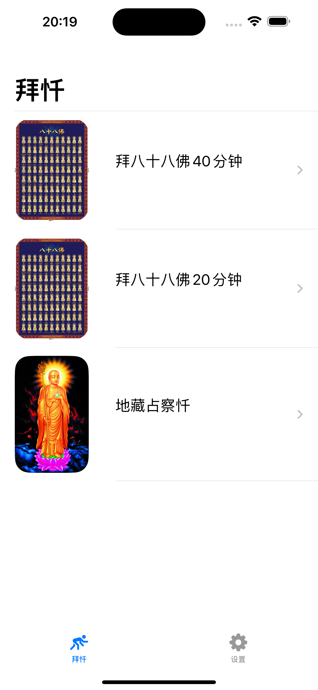
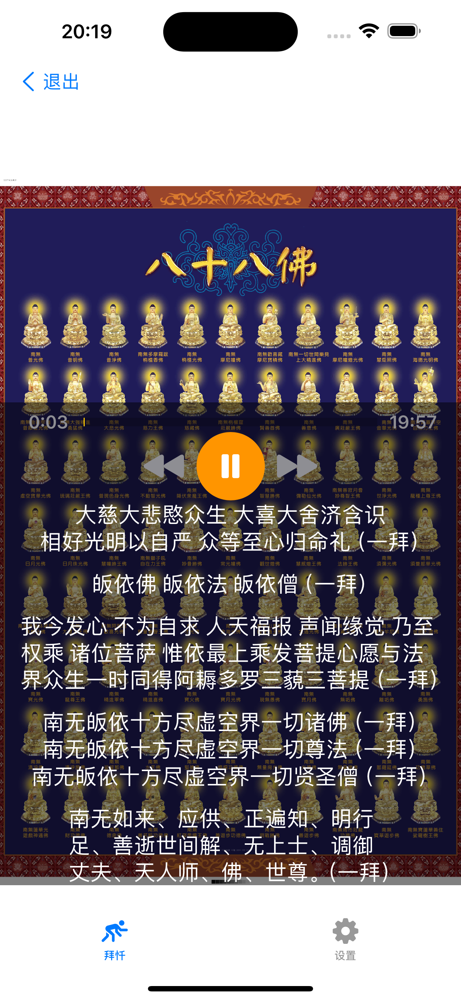

提供拜八十八佛，地藏忏三种忏法
Provide three repentance methods: 88 Buddhas Repentance and Ksitigarbha Repentance
提供拜忏音频播放，帮助你更好地进行拜忏
Provide repentance audio playback to help you better perform repentance
提供文字显示查看功能，方便你跟随拜忏
Provide text display function for easy following during repentance
音频播放时自动滚动到对应文字
Text automatically scrolls to corresponding content during audio playback
支持各种iPhone和iPad设备
Supports various iPhone and iPad devices
完全免费，无内购
Completely free, no in-app purchases
拜忏助手 - 每日三省吾身
拜忏助手是一款专为佛友设计的拜忏工具，帮助你进行日常的忏悔和修行。 它提供了拜八十八佛，地藏忏三种忏法，以及拜忏音频播放和文字显示查看功能， 让你的拜忏修行更加专注和有效。
版本：1.0.1
开发者：学辉 杨
佛友、修行者、希望通过拜忏来净化心灵的人士
在应用中，你可以选择拜八十八佛，地藏忏等忏法， 根据自己的修行需求进行选择。
选择忏法后，点击播放按钮即可开始拜忏音频播放， 应用会自动滚动到对应的文字内容。
您可以通过邮件联系开发者：yangxuehui@outlook.com 或在技术支持网站留言获取帮助。
BaiChan Assistant - Daily self-reflection and repentance
BaiChan Assistant is a repentance tool designed specifically for Buddhists to help you perform daily repentance and practice. It provides three repentance methods: 88 Buddhas Repentance and Ksitigarbha Repentance, as well as repentance audio playback and text display functions, making your repentance practice more focused and effective.
Version: 1.0.1
Developer: 学辉 杨
Buddhists, practitioners, individuals who want to purify their minds through repentance
In the app, you can select repentance methods such as 88 Buddhas Repentance and Ksitigarbha Repentance, according to your practice needs.
After selecting a repentance method, click the play button to start repentance audio playback, and the app will automatically scroll to the corresponding text content.
You can contact the developer via email: yangxuehui@outlook.com or leave a message on the technical support website for help.